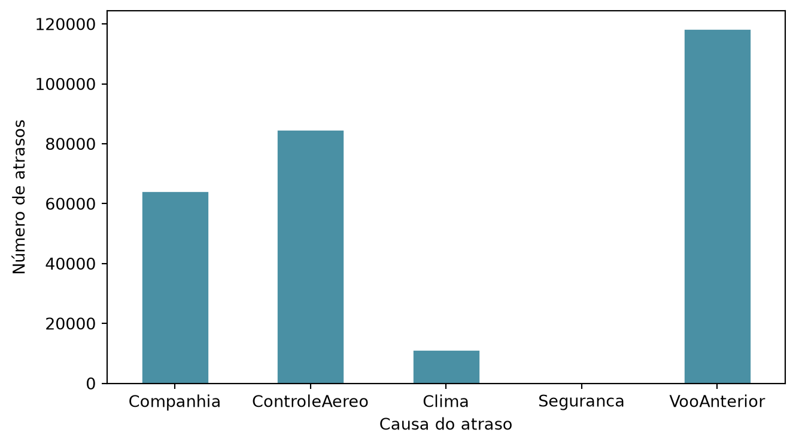

Esta seção corresponde à seção 1.6 de Bruce et al. (2020).
A seção 1.5 abriu mão do resumo numérico e olhou a distribuição inteira — percentis, boxplot, histograma, densidade. Todo esse ferramental depende de uma coisa: os valores serem números, ordenáveis e subtraíveis entre si. Isso desmorona por completo diante de dado categórico. Não existe percentil 95 de uma causa de atraso de voo, nem um “ponto médio” entre Clima e Seguranca para tirar uma mediana. A seção 1.1 já havia separado categórico de numérico — nominal, ordinal, binário — e é hora de ver o que sobra da caixa de ferramentas quando o dado é desse tipo.
A resposta, adiantando: quase tudo muda, e o pouco que sobra é mais simples do que parece.
Os dados
Vamos usar as causas de atraso de voo no aeroporto de Dallas/Fort Worth: problema atribuído à companhia aérea (Companhia), controle de tráfego aéreo (ControleAereo), clima (Clima), segurança (Seguranca) e atraso herdado de um voo anterior da mesma aeronave (VooAnterior). Cinco categorias nominais — nenhuma ordem natural entre elas, no sentido da seção 1.1.
Proporções: o resumo que substitui a média
Para dado numérico, o primeiro resumo é uma medida de localização — média, média aparada, mediana. Nenhuma delas se aplica aqui: somar “Companhia + Clima” e dividir por dois não produz nada interpretável, porque não há distância nem ordem entre as categorias. O que resta, e é suficiente, é a proporção de cada categoria sobre o total.
Repare no formato de dfw: uma linha, cinco colunas. Cada coluna é uma categoria, e o único valor de cada uma é a contagem de atrasos atribuídos a ela — o oposto do formato “uma linha por observação” que os capítulos anteriores usaram. É por isso que os próximos chunks recorrem a .transpose(): para virar as cinco colunas em cinco linhas, uma por causa, antes de desenhar o gráfico, extrair a moda ou calcular o valor esperado.
ControleAereo e VooAnterior somam sozinhos mais de 70% dos atrasos; Seguranca responde por pouco mais de um décimo de 1%. É toda a “distribuição” que um dado categórico tem para oferecer — não uma forma contínua, mas um conjunto de fatias.
Gráfico de barras não é histograma
fig, ax = plt.subplots()dfw.transpose().plot.bar(ax=ax, legend=False, color="#4a90a4", edgecolor="white")ax.set_xlabel("Causa do atraso")ax.set_ylabel("Número de atrasos")plt.xticks(rotation=0)plt.tight_layout()plt.show()

Figura 7.1: Causas de atraso no aeroporto de Dallas/Fort Worth. As barras são separadas: o eixo é categórico, não contínuo.
É tentador olhar para esse gráfico como “o histograma da seção 1.5, com barras diferentes”. Não é, e a diferença não é estética.
No histograma, o eixo X é numérico e contínuo, e as barras se encostam porque não há espaço entre uma faixa e a seguinte — são pedaços contíguos da mesma reta de números. No gráfico de barras, o eixo X é categórico, e as barras vêm separadas de propósito: não existe “entre ControleAereo e Clima”, e a ordem em que as categorias aparecem no eixo é arbitrária, não informativa. Desenhar Companhia, ControleAereo, Clima, Seguranca e VooAnterior com barras encostadas sugeriria visualmente uma continuidade e uma ordem que os dados não têm — como se uma causa viesse “depois” da outra por algum motivo numérico. Não é preciosismo de estilo: é o mesmo cuidado que a seção 1.1 teve ao impedir que uma coluna nominal respondesse a perguntas de ordem.
A moda: a única “localização” possível
moda = proporcoes.transpose().iloc[:, 0].idxmax()print(f"Moda (causa mais frequente): {moda}")
Moda (causa mais frequente): VooAnterior
A moda — a categoria mais frequente — é a única medida de localização que sobrevive à falta de ordem e de distância entre categorias. Ela não exige somar nem ordenar nada: só contar qual fatia é a maior.
A moda de dfw é VooAnterior, com 42% dos atrasos — não Companhia nem Clima, as causas que viriam à mente primeiro ao pensar em “atraso de voo”. A maior fonte de atraso em Dallas/Fort Worth não é uma causa local do próprio aeroporto: é um voo anterior da mesma aeronave chegando atrasado e empurrando o atraso adiante. O gargalo não está em Dallas — está na malha aérea inteira, se propagando de aeroporto em aeroporto.
Valor esperado
Quando as categorias, além de uma proporção, carregam um valor numérico associado — um custo, um ganho, um tempo —, é possível ir além da moda. O valor esperado pondera cada valor pela probabilidade da categoria a que ele pertence:
\[\text{VE} = \sum_{i=1}^{n} p_i \cdot v_i\]
Suponha que uma companhia aérea estime o custo médio de compensação por passageiro, e que esse custo dependa da causa do atraso:
# Uma companhia estima o custo médio de compensação por passageiro,# conforme a causa do atraso.custo = {"Companhia": 180, "ControleAereo": 40, "Clima": 0, "Seguranca": 25, "VooAnterior": 120}p = (dfw / dfw.values.sum()).transpose().iloc[:, 0] # probabilidade de cada causave =sum(p[causa] * valor for causa, valor in custo.items())print(f"Valor esperado do custo por atraso: R$ {num(ve, 2)}")
Valor esperado do custo por atraso: R$ 104,55
R$ 104,55 não é o custo de nenhum atraso individual — nenhuma causa isolada custa exatamente isso. É o custo médio por atraso, se essa mistura de causas se repetisse indefinidamente. Uma causa rara contribui quase nada mesmo quando não é a mais barata (Seguranca, R$ 25 em 0,12% dos casos, entra com R$ 0,03 no total); uma causa de custo intermediário mas frequente (ControleAereo, R$ 40 em 30% dos casos) entra com R$ 12,16 — 400 vezes mais. O valor esperado não é dispersão nem localização de novo — é a base de toda decisão sob incerteza que a estatística tratará daqui em diante.
Resumo
Causa
Contagem
Proporção
Companhia
64.263
23,02%
ControleAereo
84.856
30,40%
Clima
11.235
4,03%
Seguranca
343
0,12%
VooAnterior
118.428
42,43%
Regra prática: para dado numérico, o resumo é localização + dispersão + forma (seções 1.3 a 1.5). Para dado categórico nominal, isso colapsa em proporção e moda — não porque o dado categórico seja “mais pobre”, mas porque perguntas de soma, distância e ordem simplesmente não fazem sentido nele. E quando cada categoria carrega um valor associado, o valor esperado combina probabilidade e consequência em um único número.
Exercícios
1. A causa Seguranca responde por 0,12% dos atrasos. Uma companhia deveria investir em reduzir atrasos de segurança?
DicaResposta
Pela frequência, não — Seguranca é, de longe, a menor causa. Mas frequência não é tudo: o valor esperado depende também do custo de cada evento. Uma categoria rara e catastrófica pode ter valor esperado maior que uma categoria frequente e barata (um incidente de segurança grave pode custar muito mais que os R$ 25 por passageiro usados no exemplo). A pergunta certa combina probabilidade e consequência — nunca uma sozinha.
2. Por que a moda é a única medida de localização que faz sentido para dfw?
DicaResposta
Porque as categorias de dfw são nominais — não há ordem nem distância entre “Clima” e “Seguranca”. Média e mediana exigem que os valores possam ser somados ou ordenados; nenhuma das duas operações significa algo quando o “valor” é o nome de uma causa de atraso. A moda só precisa contar qual categoria é a mais frequente, e essa pergunta continua fazendo sentido mesmo sem ordem nenhuma entre as categorias.
3. Recalcule o valor esperado supondo que o custo de Clima sobe de R$ 0 para R$ 200. O que muda, e por que o efeito é pequeno?
DicaResposta
custo["Clima"] =200sum(p[causa] * valor for causa, valor in custo.items())
O valor esperado sobe cerca de R$ 8 (0,0403 × 200 ≈ 8,05), passando de R$ 104,55 para cerca de R$ 112,60. O efeito é pequeno porque Clima tem probabilidade baixa (4%) — no valor esperado, cada custo entra ponderado pela sua probabilidade, não pelo valor bruto. É exatamente por isso que o valor esperado é a ferramenta certa para decisão: ele impede que um número grande, mas raro, domine a conclusão sozinho.
Bruce, Peter, Andrew Bruce, e Peter Gedeck. 2020. Practical Statistics for Data Scientists: 50+ Essential Concepts Using R and Python. 2nd ed. O’Reilly Media.